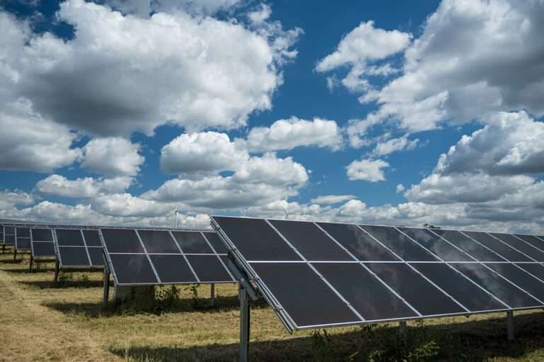
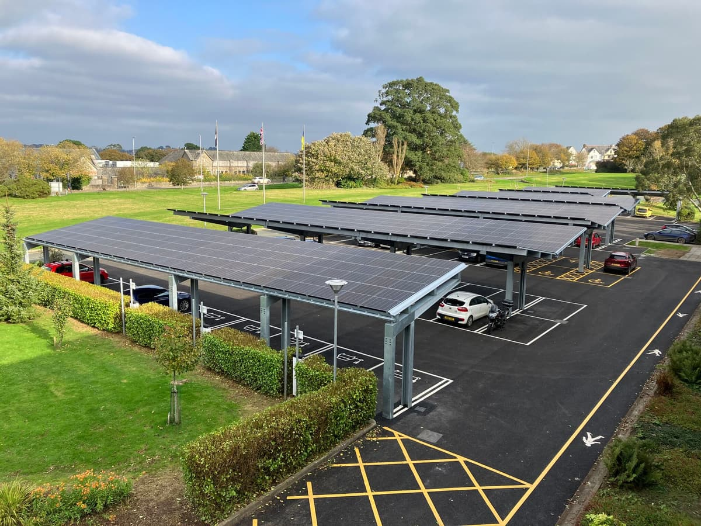

How solar PV works, the different installation types, battery storage options, and how UK businesses are financing their systems.
Solar photovoltaic (PV) panels convert sunlight directly into direct current (DC) electricity using semiconductor cells, most commonly silicon. This DC electricity is then converted to alternating current (AC) by an inverter, making it compatible with standard electrical systems in your building.
The electricity generated can be used directly by equipment and lighting in the building (self-consumption), stored in a battery system for later use, or exported to the National Grid. In most commercial installations, maximising self-consumption is the priority, as it displaces electricity that would otherwise be purchased from the grid at retail rates.
The primary factors are panel orientation and tilt, available roof area, shading from adjacent structures or rooftop equipment, and the solar irradiance at your location. The UK receives less solar irradiance than southern Europe, but modern panels are efficient enough to make commercial solar viable across all UK regions, including Scotland and Northern Ireland.
A typical commercial layout in the UK generates roughly 800 to 1,050 kWh a year for every kWp of panels, depending on where it is. Southern England gets the most sunshine and northern Scotland the least. The calculator uses SAP 10.3 sunshine data for 21 UK regions, picked from your postcode. See the full table in how the calculator works.
Commercial solar installations vary considerably in design depending on the site. The three principal types are rooftop (the most common), ground-mounted, and solar carports. Each has distinct structural, planning, and financial characteristics.
Mounted on existing roof structures using ballasted or penetrating racking systems. Most commercial rooftops can be retrofitted without structural modifications. Flat roofs are typically ballasted; pitched roofs use rail-and-clamp systems.

Installed on concrete or screw-pile foundations on unused land adjacent to the site. Allows optimal angle and orientation regardless of roof constraints. Particularly suited to agricultural and industrial sites with available land.

Elevated structures covering car parks that support solar panels above. Provide dual benefit of renewable generation and weather protection. Increasingly paired with EV charging points.
Modern commercial systems use monocrystalline silicon panels, which offer efficiencies of 20–23% and performance warranties of 25–30 years. Bifacial panels, which generate electricity from both sides, offer additional yield on high-albedo surfaces. String inverters remain the most common choice for commercial rooftops; microinverters and power optimisers are used where shading or complex roof geometry requires panel-level optimisation.
In England, rooftop solar on commercial buildings is usually permitted development, with no capacity limit since December 2023. Listed buildings, some protected areas and larger ground-mounted arrays need more care. Almost every commercial system needs a G99 application to the local network operator (DNO) before it can connect. Our guide to planning and grid connection covers both in detail.
Battery Energy Storage Systems (BESS) are increasingly deployed alongside commercial solar installations, though they are not always required. The business case depends on the site's energy profile, tariff structure, and whether demand management benefits are available.
A battery stores surplus solar generation that would otherwise be exported to the grid at low SEG tariff rates. This stored energy is then used during the evening or during grid peak periods, further reducing grid imports. On time-of-use tariffs (such as Agile Octopus or similar half-hourly business tariffs), batteries can also charge during cheap overnight periods and discharge during expensive peak periods, independent of solar generation.
For larger commercial and industrial sites on half-hourly metered supplies, demand charges (based on maximum consumption in any 30-minute period) can form a significant portion of the electricity bill. A battery system programmed to clip peak demand can generate substantial savings that are separate from, and additional to, solar generation savings.
Lithium iron phosphate (LFP) chemistry dominates the commercial BESS market, offering a good balance of cycle life (typically 4,000–6,000 cycles), safety, and cost. The standalone payback on battery storage is typically longer than solar alone. It is most effective when co-located with solar and where demand management savings are available.
There is no single correct way to fund a commercial solar installation. The right structure depends on the organisation's capital availability, tax position, balance sheet considerations, and appetite for long-term ownership. The four main routes are summarised below.
| Structure | How it works | Best for | Key consideration |
|---|---|---|---|
| Outright purchase | Business funds the full capital cost. Owns the system and captures all savings and any export revenue from day one. | Businesses with available capital seeking maximum long-term return | Highest upfront cost; best total return over 25 years |
| Asset finance / loan | System is funded via a business loan or asset finance facility. Repayments are typically covered by the energy savings generated. | Businesses that want ownership without large upfront outlay | Net cash flow positive from day one is often achievable |
| Power Purchase Agreement (PPA) | A third party funds, owns, and maintains the system. The business buys the electricity generated at a fixed, below-market rate for 10–25 years. | Businesses with zero capex requirement; public sector organisations | Lower savings than ownership; system reverts or is purchased at end of term |
| Operating lease | Business leases the system for a fixed monthly payment. Treated as an operating expense rather than capital expenditure on the balance sheet. | Businesses where off-balance-sheet treatment is required | IFRS 16 / FRS 102 accounting treatment should be reviewed with auditors |
Solar panels are special rate assets for capital allowances. Companies can claim a 50% first-year allowance, with the balance written down at 6% a year, or most businesses can use the Annual Investment Allowance for 100% relief on up to £1 million of spend a year. Full expensing does not apply to solar panels. In England, rooftop solar is also exempt from business rates until 31 March 2035. See our funding guide for detail, and take advice from your accountant.
Commercial solar installations are charged VAT at the standard 20% rate. VAT-registered businesses can recover this in the normal way. The calculator shows all costs before VAT.
The Smart Export Guarantee requires licensed electricity suppliers with 150,000+ customers to offer tariffs for exported electricity. Rates vary by supplier and tariff type. Variable SEG tariffs that track wholesale prices can offer better rates than fixed tariffs during high-price periods. Export revenue is typically a minor component of commercial solar economics, as maximising self-consumption is the primary objective.
Solar panels turn daylight into DC electricity, and an inverter converts it to AC for use in the building. Your site uses the solar electricity first, and anything it cannot use is exported to the grid.
Rooftop systems on pitched or flat roofs, ground-mounted arrays on land, and solar carports built over car parks. Rooftop is the most common and usually the cheapest per kWp.
In England, rooftop solar on commercial buildings is usually permitted development, with no capacity limit since December 2023. Listed buildings, some protected areas and larger ground-mounted arrays are the main exceptions. Rules differ in Scotland, Wales and Northern Ireland.
A battery stores solar you would otherwise export, then releases it when your site needs it, such as in the evening. It can also cut peaks in your demand. It adds most value where a site exports a lot of its solar.
Buying outright, asset finance, leasing, or a Power Purchase Agreement where a funder pays for the system and you buy its electricity. Public bodies can also look to Great British Energy funding. See our funding guide.
More answers on our FAQ page.
Put the figures above to work. Our calculator applies UK-specific irradiance data, real energy prices, and your roof dimensions to produce a detailed financial model.